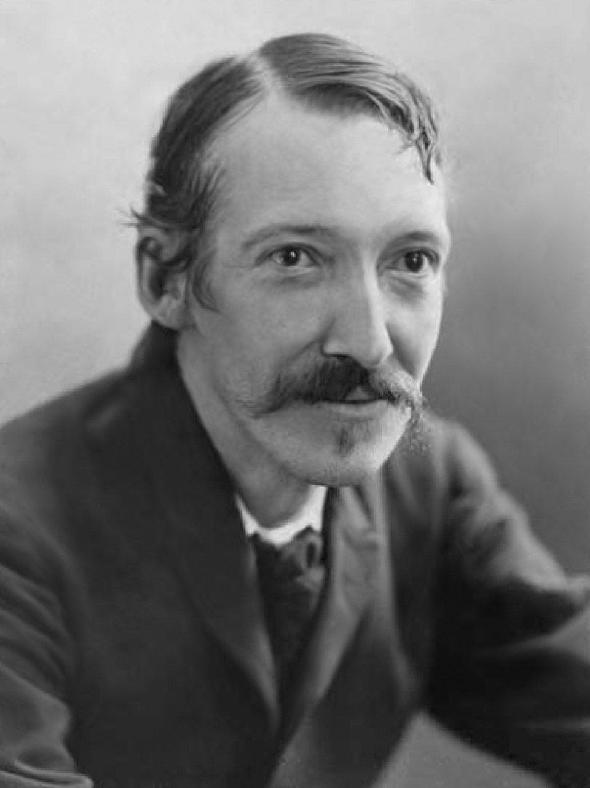
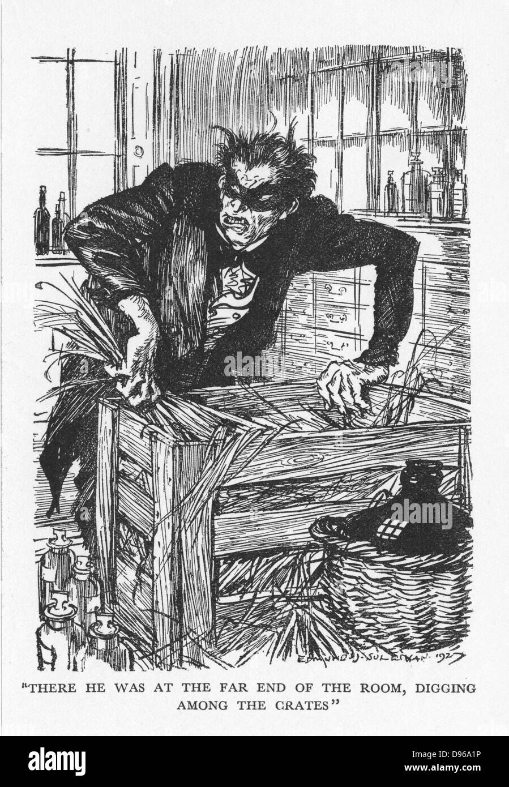
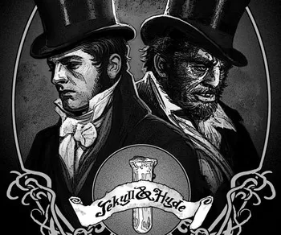
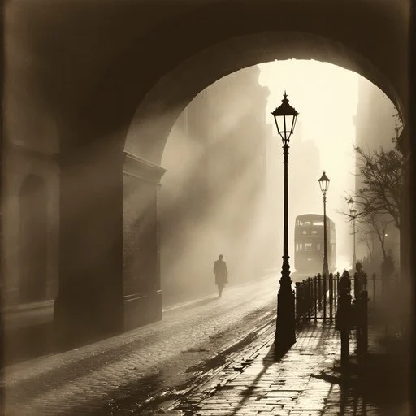
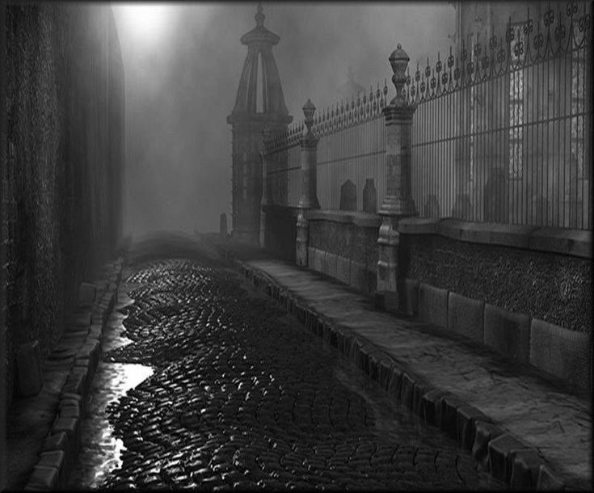

Topic: The Strange Case of Dr Jekyll and Mr Hyde

Robert Louis Stevenson was a Scottish novelist born in Edinburgh in 1850. He lived during the Victorian era, a period of great social and scientific change, when the appearance of respectability often concealed darker truths about human nature.
Stevenson was deeply influenced by the contradictions of his time: the strict moral codes of Victorian society on the surface, and the repressed desires and impulses that lay beneath. He died in 1894 in Samoa, where he had moved in search of a better climate for his health. His most famous works include Treasure Island, Kidnapped and The Strange Case of Dr Jekyll and Mr Hyde.

Published in 1886, The Strange Case of Dr Jekyll and Mr Hyde is a Gothic novella that tells the story of Dr Henry Jekyll, a respected London scientist who develops a potion capable of separating his good and evil sides into two distinct physical identities.
When he drinks the potion, Jekyll transforms into Edward Hyde: a smaller, younger, deformed figure who embodies pure evil and acts without moral restraint. At first Jekyll believes he can control the transformation, but over time Hyde grows stronger and begins to appear spontaneously, without the need for the potion. Unable to obtain the salt needed to produce more of it, Jekyll is trapped. He chooses to end his own life rather than let Hyde take over permanently.

The central theme of the novel is the duality of human nature: the coexistence of good and evil within every person. Jekyll believes that by separating the two sides he can free himself from guilt, allowing Hyde to act on his impulses while keeping his own reputation intact.
However, the experiment reveals that the two sides cannot be truly separated. Hyde is not simply Jekyll's evil half, he is the part of Jekyll that was always there, suppressed by social convention and the need to maintain a respectable image. The more Jekyll tries to control Hyde, the stronger Hyde becomes.
This theme reflects a broader Victorian anxiety: that civilization and respectability are only a thin mask over more primitive instincts.

The novel is deeply rooted in its historical context. Victorian society placed enormous importance on public reputation, moral behaviour and social status. Any deviation from these norms was considered shameful and dangerous.
Jekyll is not simply a scientist who goes wrong, he is a product of his society. He creates Hyde precisely because Victorian norms force him to repress a part of himself. Hyde represents everything that Victorian respectability refused to acknowledge: violence, desire, freedom from moral constraint.
Stevenson uses the story to criticise this hypocrisy: the more a society represses its darker instincts, the more destructive they become when they finally break free.

The novel belongs to the Gothic literary tradition, which uses dark settings, mystery and the supernatural to explore psychological and moral themes. Stevenson sets the story in foggy, gaslit Victorian London, creating an atmosphere of unease and hidden danger.
The narrative structure is notable: the story is told through multiple perspectives, letters, testimonies and a lawyer's investigation, rather than from a single narrator. This technique creates suspense and delays the full revelation of the truth, making the reader piece together the mystery alongside the characters.
The final confession, written by Jekyll himself, is one of the most powerful moments in the novel: a first-person account of how a man gradually loses control of his own identity.
I chose The Strange Case of Dr Jekyll and Mr Hyde because it is one of the most thought-provoking texts we studied in English this year.
The idea that every person contains both good and evil, and that trying to suppress one side only makes it more dangerous, feels very relevant today. It also connects to themes I explored in Italian literature with Pirandello: the question of identity, the masks we wear in society, and the gap between who we appear to be and who we really are.